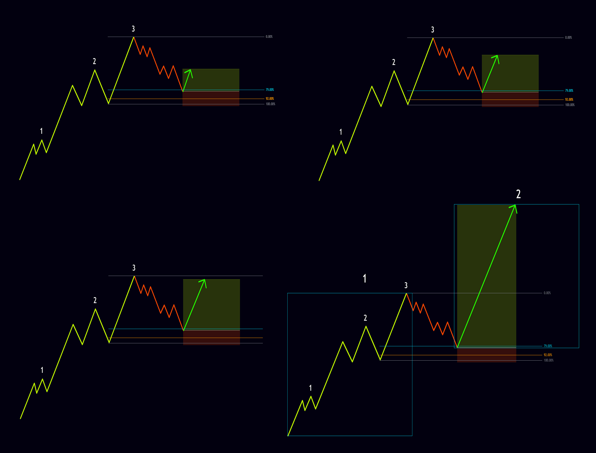
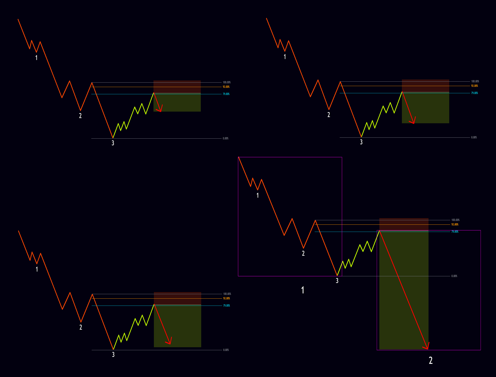
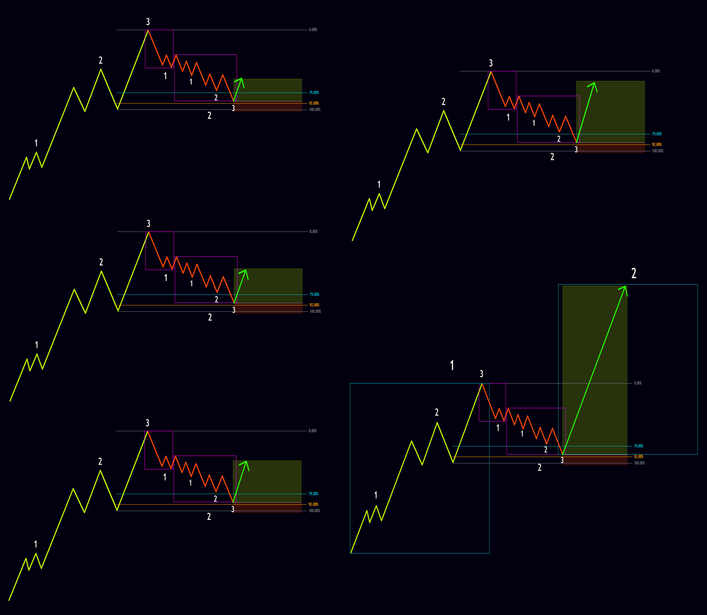
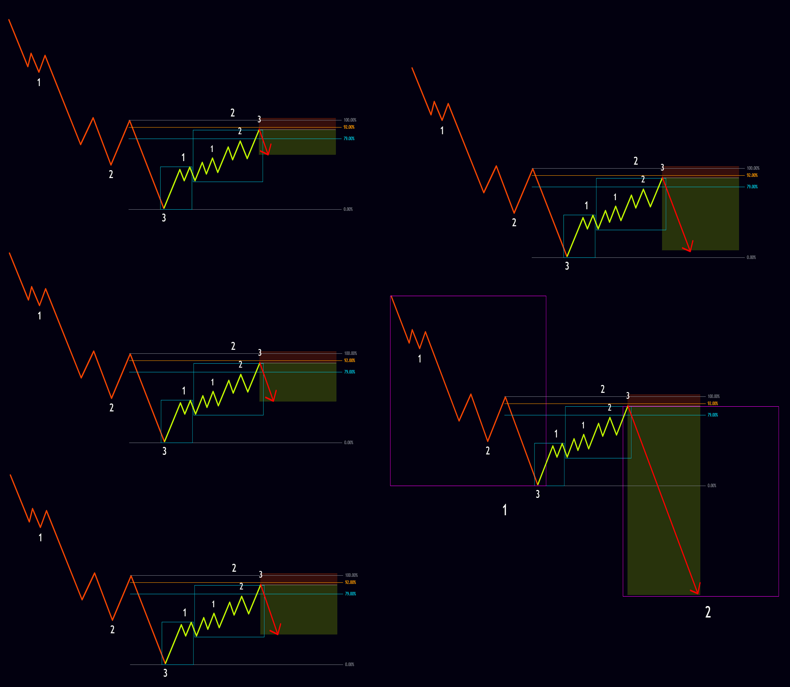
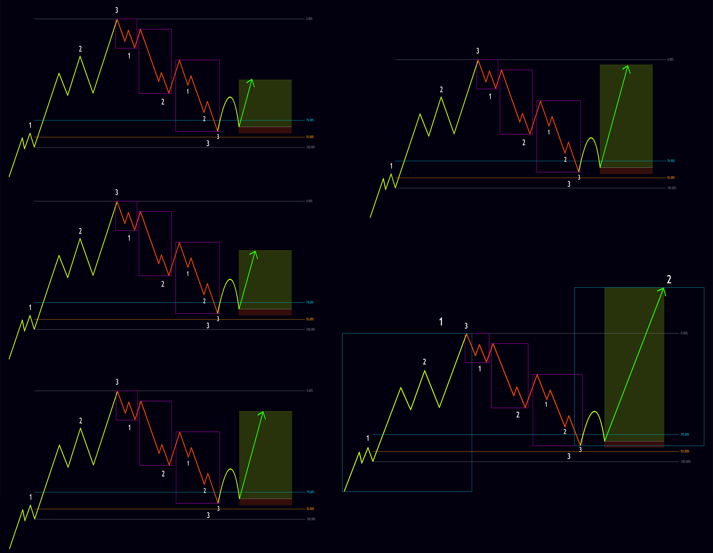
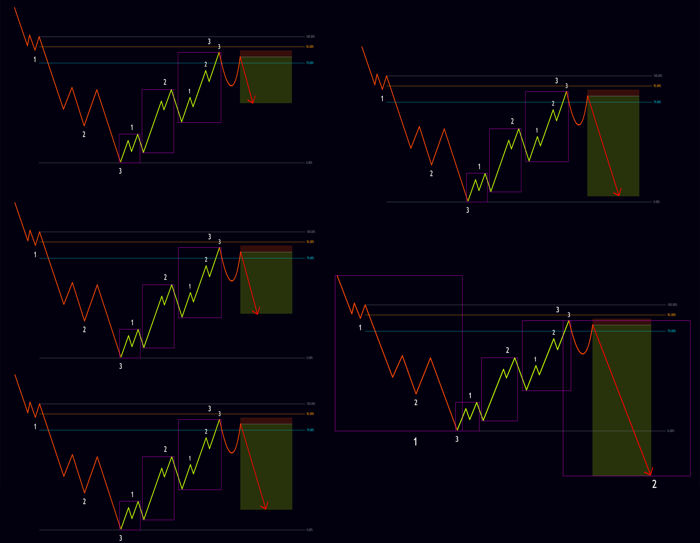
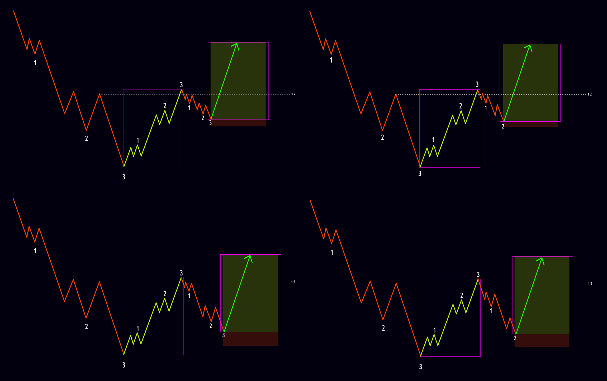
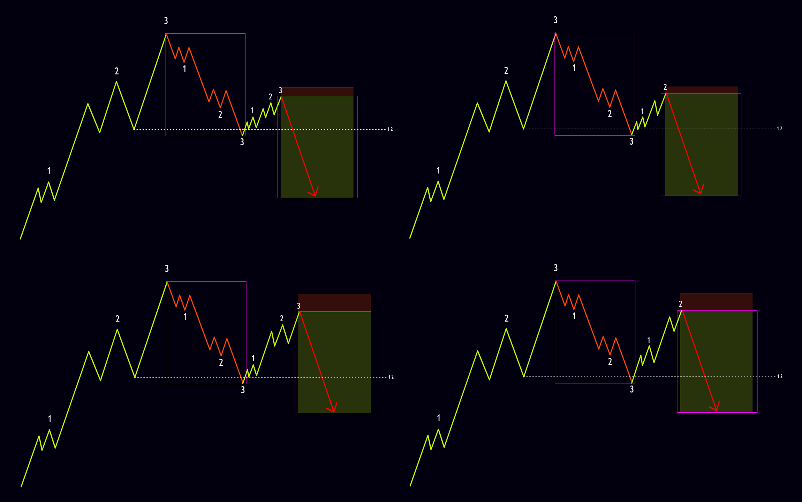

As explained in the previous post, after completing a full analysis of a trading symbol and determining its overall Market Direction, we move to the intermediate timeframe and continue the analysis to identify more suitable trade setups. Once a solid setup is found, we drop to the lower timeframe to pinpoint the precise entry. Using three different timeframes or fractals—for overall Market Direction, intermediate analysis, and position entry—sharply increases analytical precision, lowers the risk of a wrong read, and raises the odds of a successful trade. Below we examine the various position setups in the N2N strategy.
Reverse Position at Node 3
As previously noted, once three consecutive bullish or bearish nodes are complete, the market is expected to correct at least as far as the first internal Pending 1-2 of Node 3. Depending on the higher-timeframe direction and the broader analysis, a full reverse and change of overall trend can also be anticipated. This creates an opportunity to take a position for the potential reversal. The checklist for this setup is as follows:
- The market has closed one of the internal Pending 1-2s of the left-side node with three nodes.
- The three-node structure sits on a Cycle Evolution Zone of a node and has preferably not exceeded 92%.
- If the market is at an ATH and no left-side node exists, Node 3 should have filled roughly the same Symmetry as Node 2.
- If the overall Market Direction is bullish, the three completed nodes must be bearish, and vice versa if the overall direction is bearish.
Once the checklist is confirmed, a long or short position can be entered as follows:
- Enter the position as soon as the internal node count of Node 3 is complete.
- For a long, place the stop loss below 100% of the left-side node; for a short, place it above 100% of the left-side node.
- If the market is at an ATH, calculate the stop loss using ATR. Depending on the symbol and its volatility, a multiplier of 1.5 or 2 can be used.
- Take profit will vary according to the type of position and the market’s location.
The images below show various examples of this setup in both long and short form.


Reverse Position at Node 3 of 2
Similar to the Reverse Position at Node 3, when the market completes a two-node bullish or bearish move, it is expected to correct at least as far as the first internal Pending 1-2 of the Node 3 of 2. Depending on the higher-timeframe direction and the broader analysis, a full reverse and change of overall trend can also be expected. This creates an opportunity to take a position for the potential reversal. The checklist for this setup is as follows:
- The market has closed one of the internal Pending 1-2s of the left-side node with two nodes.
- The two-node structure sits on a Cycle Evolution Zone of a node and has preferably not exceeded 92%.
- If the overall Market Direction is bullish, the two completed nodes must be bearish, and vice versa if the overall direction is bearish.
Once the checklist is confirmed, a long or short position can be entered as follows:
- Enter the position as soon as the internal node count of the Node 3 of 2 is complete.
- For a long, place the stop loss below 100% of the left-side node; for a short, place it above 100% of the left-side node.
- Take profit will vary according to the type of position and the market’s location.
The images below show various examples of this setup in both long and short form.


Reverse Position at the End of EP After Node 3
Sometimes after three bullish or bearish nodes complete, a full cycle closes and the market then reverses. As discussed in the cycles section, this complete cycle is called an End Point and represents the market’s final attempt to continue its prior bullish or bearish path. Depending on the higher-timeframe direction and the broader analysis, the market may close one of the Pending 1-2s of its existing trend and resume that trend, or it may fully reverse and change direction. This creates an opportunity to take a position for the potential reversal. The checklist for this setup is as follows:
- The market has closed one of the internal Pending 1-2s of the left-side node with three nodes.
- The three-node structure sits on a Cycle Evolution Zone of a node and has preferably not exceeded 92%.
- If the market is at an ATH and no left-side node exists, Node 3 should have filled roughly the same Symmetry as Node 2.
- If the overall Market Direction is bullish, the three completed nodes must be bearish, and vice versa if the overall direction is bearish.
- The EP has preferably opened a target. Opening a target means that in a bullish case it has tagged the high of the internal Node 3 – main left-side Node 3 but has not reached the Cycle Evolution Zone of the internal Node 2 – main Node 3, then returned to close the cycle. In a bearish case it has tagged the low of the internal Node 3 – main left-side Node 3 but has not reached the Cycle Evolution Zone of the internal Node 2 – main Node 3, then returned to close the cycle.
Once the checklist is confirmed, a long or short position can be entered as follows:
- Enter the position once the EP closes its cycle with two or three nodes.
- For a long, place the stop loss below 100% of the left-side node of the EP; for a short, place it above 100% of the left-side node of the EP.
- Take profit will vary according to the type of position and the market’s location.
The images below show various examples of this setup in both long and short form.


Position in the Direction of Node 1 to Node 2
In this scenario, once three bullish or bearish nodes have completed and the market has reversed and formed a new Node 1, a position can be taken in the direction of the market during the Flush of that Node 1. Depending on the higher-timeframe direction and the broader analysis, continuation of the trend can be expected, so the market should move at least the Symmetry of Node 1 in order to form Node 2. The checklist for this setup is as follows:
- After a two- or three-node reverse, the market has formed a new Node 1.
- The new Node 1 has opened a target. Opening a target means that in a bullish case Node 1 has tagged the high of the main left-side Node 3 but has not reached the Cycle Evolution Zone of the main Node 2, then returned for a Flush. In a bearish case Node 1 has tagged the low of the main left-side Node 3 but has not reached the Cycle Evolution Zone of the main Node 2, then returned for a Flush.
- The Flush of Node 1 must close at least one of the internal Pending 1-2s of its internal Node 3 and should not extend beyond the Cycle Evolution Zone of its internal Node 2.
- If the overall Market Direction is bullish, Node 1 must be bullish, and vice versa if the overall direction is bearish.
Once the checklist is confirmed, a long or short position can be entered as follows:
- Enter the position once the Flush of Node 1 settles with two or three nodes on one of the Cycle Evolution Zones.
- For a long, place the stop loss below 100% of the Cycle Evolution Zone of the left-side node; for a short, place it above 100% of the Cycle Evolution Zone of the left-side node.
- The minimum take profit for this setup equals the Symmetry of Node 1; however, if the higher-timeframe Market Direction aligns with the position, the take profit can be larger.
The images below show various examples of this setup in both long and short form.


Additional Notes on Position Setups
In some cases a setup forms, yet the market only travels as far as the minimum target of that setup before resuming its prior bullish or bearish path. This typically occurs when the market still has an open target on a higher timeframe and simply closes the first Pending 1-2 before continuing. Paying attention to open targets on higher timeframes therefore leads to more accurate target placement on positions.
Because of the fractal nature of the market, every position setup described above can be applied on any timeframe—from the monthly chart all the way down to the 1-second chart—and will function correctly.
- Day traders can determine overall Market Direction from the 1-hour timeframe, perform intermediate analysis on the 5 or 15 minute chart, and enter on the 1 minute chart without needing to engage higher timeframes. Still, it is recommended that once a year they analyze the symbol from the top down, as outlined in the previous post, so they know the overall Market Direction.
- Scalpers do not need the weekly, daily, 4 hour, or even 1 hour timeframes. They only need to establish overall direction from the 5 or 15 minute chart, run intermediate analysis on the 1 or 3 minute chart, and enter on the 15 or 30 second chart.
- Fast scalpers likewise have no need for the weekly, daily, 4 hour, 1 hour, or even 15 minute timeframes. Because smaller timeframes aggregate into larger ones under the fractal nature of the market, these traders only need to determine overall direction from the 3 or 5 minute chart, perform intermediate analysis on the 15 or 30 second chart, and enter on the 1 or 5 second chart.
Position management, risk size, moving stops to break-even, and the use of partial exits are risk-management topics that fall outside the scope of the trading setups presented here. Each trader, according to experience, risk tolerance, win rate, and other factors, requires a personal risk-management approach. These subjects will be examined in detail later in the risk-management section.